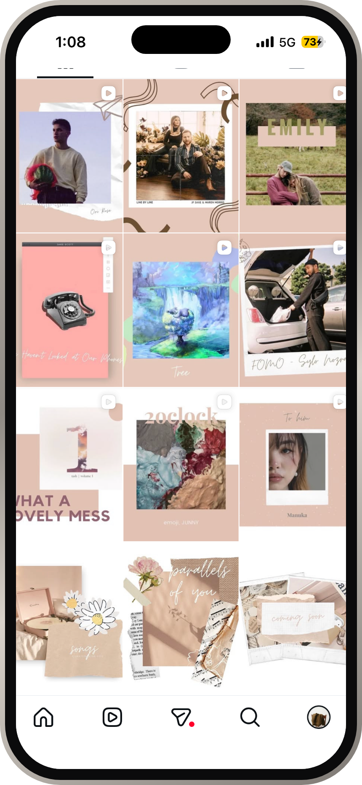
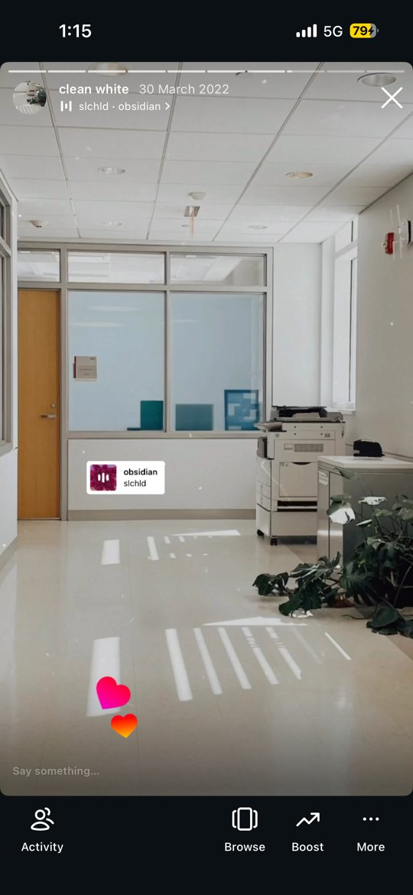
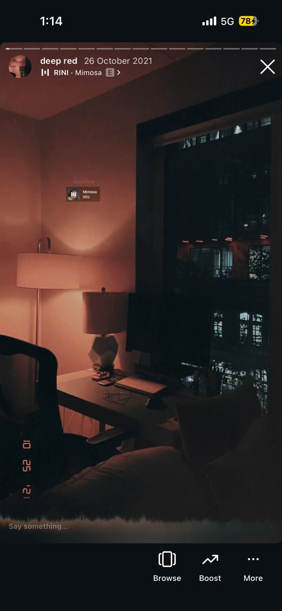
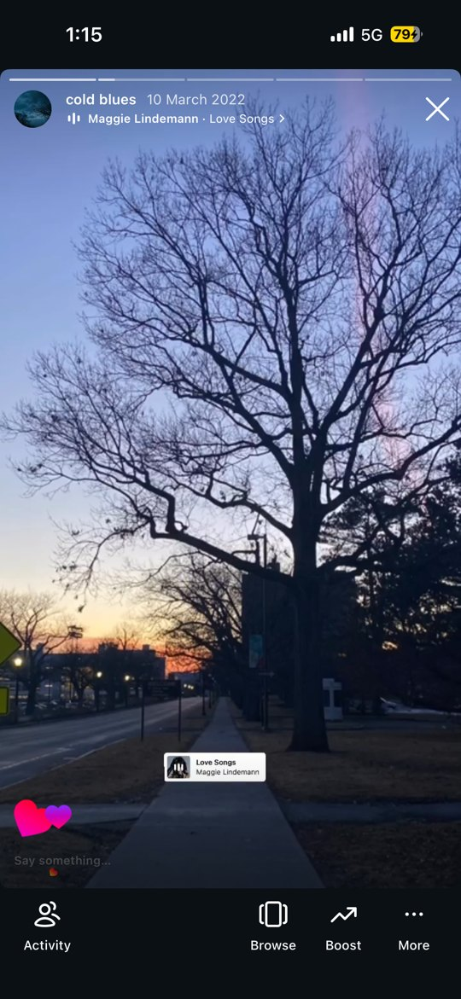
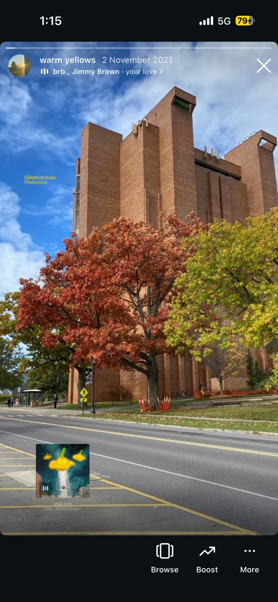
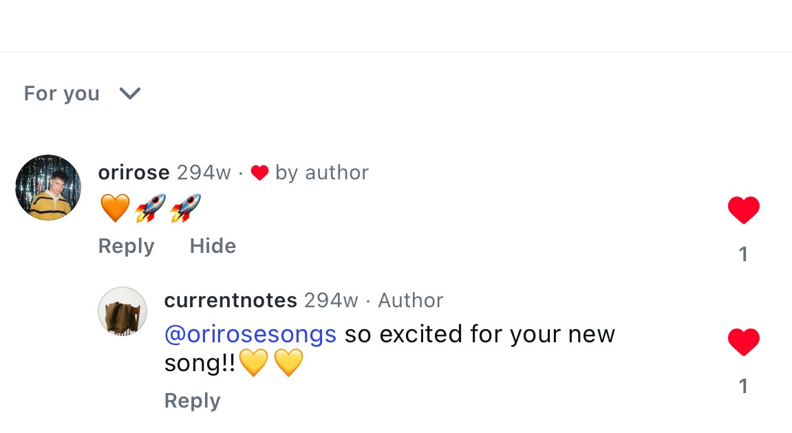

Music curation
Current Notes
An Instagram account I started to help people discover new songs, especially from indie artists.
Outcome
An indie artist with 30k listeners replied to one of my posts.
- Project
- Personal project
- Jun 2020 – Mar 2021
The problem
Great indie artists are hard to find.
Streaming apps keep recommending what you already listen to, and the radio plays what’s already viral. I listen to many genres, and whenever I played my playlist on car rides or at friends’ places, someone would ask what song was on.
I was already sending songs to friends one by one, so I started an account to share them with everyone at once.

My rules
Each post credited the musician with cover art, title and artist, plus my favorite 30–40 seconds. I matched type to each song’s mood and planned posts in rows of three.
Curating through stories
Story highlights grouped songs by mood, each with its own color.




What came next
It stayed small at 14 posts & 72 followers, but an indie artist (30k listeners) replied.

Reflection
I built the system as I went. Matching fonts to each song felt expressive, but one typeface would have unified the feed.